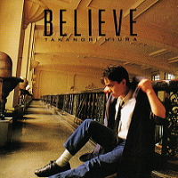

BELIEVE
[再発]CD選書TECN-15276
-
01. ANGEL
作詞：日浦 孝則 作曲：日浦 孝則 編曲：梁 邦彦
-
02. ONE WAY DRIVE
作詞：池永 康記 作曲：日浦 孝則 編曲：杉山TOM
-
03. スロウダンス
作詞：日浦 孝則・池永 康記 作曲：日浦 孝則 編曲：杉山TOM
-
04. STATION
作詞：池永 康記 作曲：日浦 孝則 編曲：杉山TOM
-
05. NOTHING
作詞：岩里 祐穂 作曲：中崎 英也 編曲：杉山TOM
-
06. 心のベル
作詞：池永 康記 作曲：日浦 孝則 編曲：杉山TOM
-
07. HAPPENING
作詞：岩里 祐穂 作曲：中崎 英也 編曲：杉山TOM
-
08. アクトレス
作詞：池永 康記 作曲：日浦 孝則 編曲：杉山TOM
-
09. もうやめた
作詞：日浦 孝則 作曲：日浦 孝則 編曲：杉山TOM